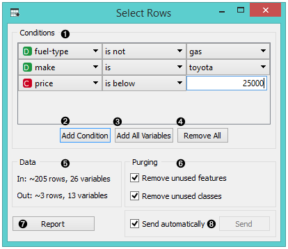
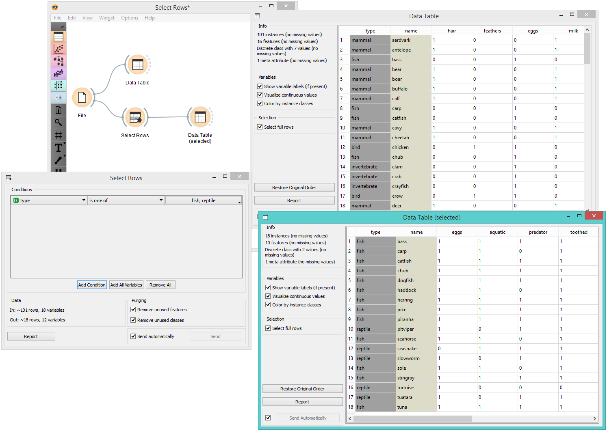
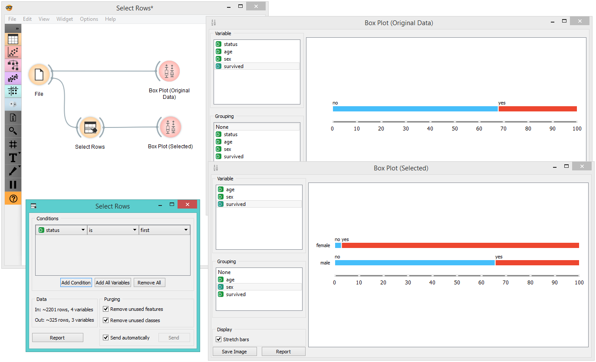

Select Rows
Selects data instances based on conditions over data features.
Inputs
- Data: input dataset
Outputs
- Matching Data: instances that match the conditions
- Non-Matching Data: instances that do not match the conditions
- Data: data with an additional column showing whether a instance is selected
This widget selects a subset from an input dataset, based on user-defined conditions. Instances that match the selection rule are placed in the output Matching Data channel.
Criteria for data selection are presented as a collection of conjunct terms (i.e. selected items are those matching all the terms in ‘Conditions’).
Condition terms are defined through selecting an attribute, selecting an operator from a list of operators, and, if needed, defining the value to be used in the condition term. Operators are different for discrete, continuous and string attributes.

- Conditions you want to apply, their operators and related values
- Add a new condition to the list of conditions.
- Add all the possible variables at once.
- Remove all the listed variables at once.
- Information on the input dataset and information on instances that match the condition(s)
- Purge the output data.
- When the Send automatically box is ticked, all changes will be automatically communicated to other widgets.
- Produce a report.
Any change in the composition of the condition will update the information pane (Data Out).
If Send automatically is selected, then the output is updated on any change in the composition of the condition or any of its terms.
Example
In the workflow below, we used the Zoo data from the File widget and fed it into the Select Rows widget. In the widget, we chose to output only two animal types, namely fish and reptiles. We can inspect both the original dataset and the dataset with selected rows in the Data Table widget.

In the next example, we used the data from the Titanic dataset and similarly fed it into the Box Plot widget. We first observed the entire dataset based on survival. Then we selected only first class passengers in the Select Rows widget and fed it again into the Box Plot. There we could see all the first class passengers listed by their survival rate and grouped by gender.
